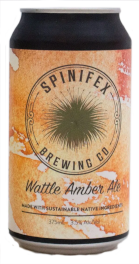

Wattle Amber Ale
Spinifex Brewing Co.
Malaga, Western Australia
375mL can
3.4% Alc/Vol
This rich well-crafted amber ale has been infused with roasted Western Australian Wattle seed from the Albany region. This beer has a wonderful flavour that is rich, dark with a hint of smoky caramel.
This is a beer for savouring with friends, The Wattle is available in full and mid strength with the mid strength holding all the depth and flavour of a big full strength amber beer.
Spinifex Brewing Co is the new name in the Craft Beer industry, following two years of behind the scenes development perfecting our world first native infused recipes we are excited to bring this Aboriginal and Veteran owned Brewery to life.
Spinifex Brewing Co is producing unique Australian beers developed and infused with the great flavours of Australia to make some of the most drinkable, flavourful and sophisticated beers you can hope to sample and love.